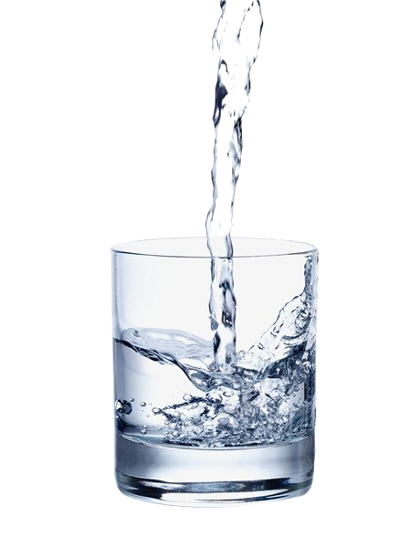
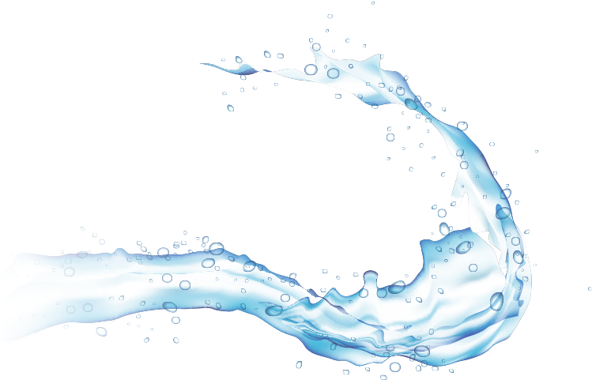
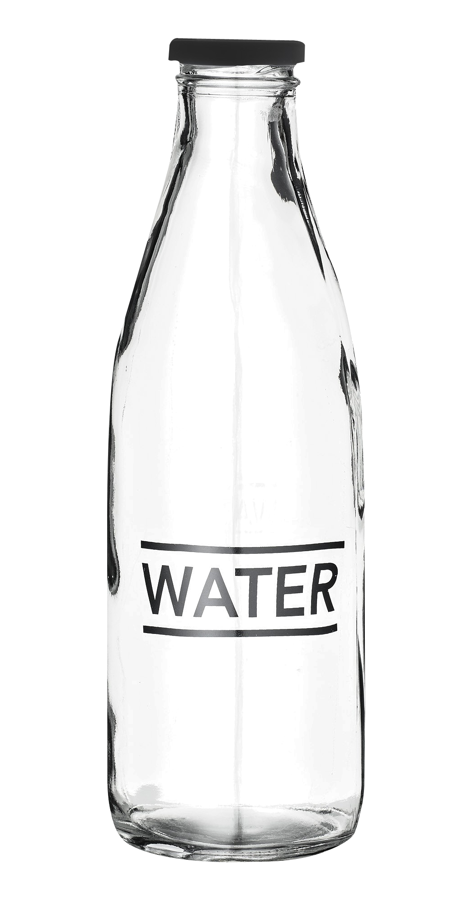

Benefits of drinking water
- It may improve memory and mood
- It can help reduce sugar cravings and aid weight maintenance
- It may improve exercise performance
- It may reduce headaches and migraines
- It may help prevent constipation in children and adults
- It may help to prevent kidney stones
- It may help reduce the risk of bladder infections

Hover Over me

Benefits of Glas Bottles
- Glass is 100% recyclable and can be recycled endlessly without loss in quality or purity.
- Legislation such as container deposit measures will further enhance the benefits associated with glass packaging.
- 80% of the glass that is recovered is made into new glass products.
- A glass container can go from a recycling bin to a store shelf in as little as 30 days. An estimated 80% of recovered glass containers are made into new glass bottles.
- Glass is nonporous and impermeable, so there are no interactions between glass packaging and products to affect the flavor of food and beverages. No nasty after taste - ever.
- Glass has an almost zero rate of chemical interactions, ensuring that the products inside a glass bottle keep their strength, aroma, and flavor.
- When consumers choose foods or beverages that are packaged in glass, they avoid potential risks while enjoying a number of benefits.